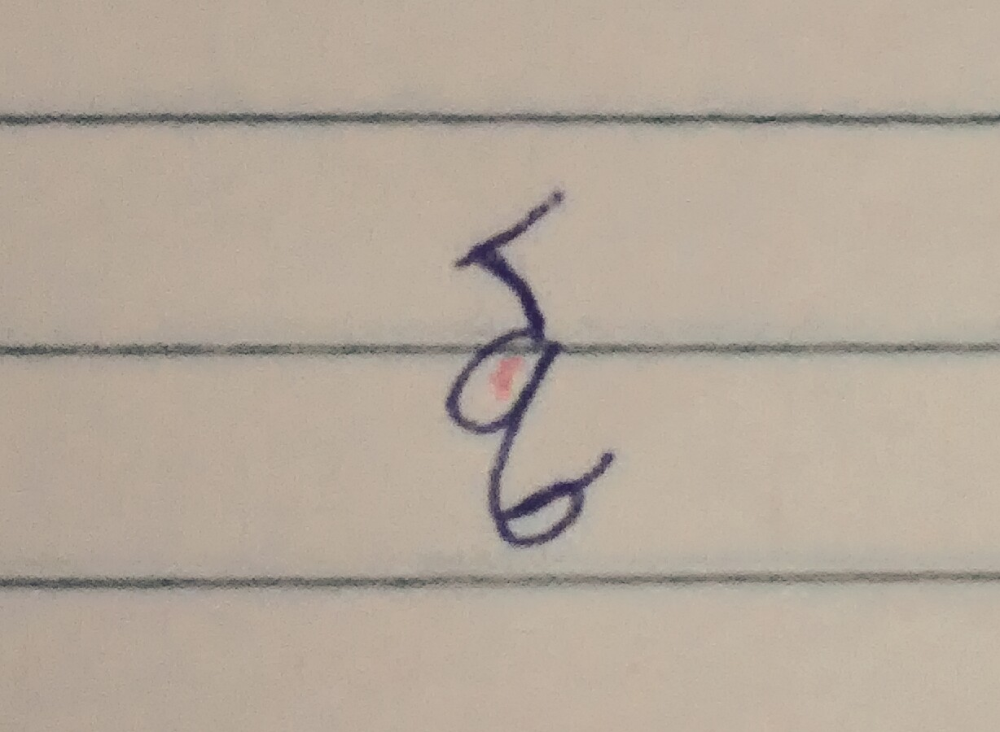
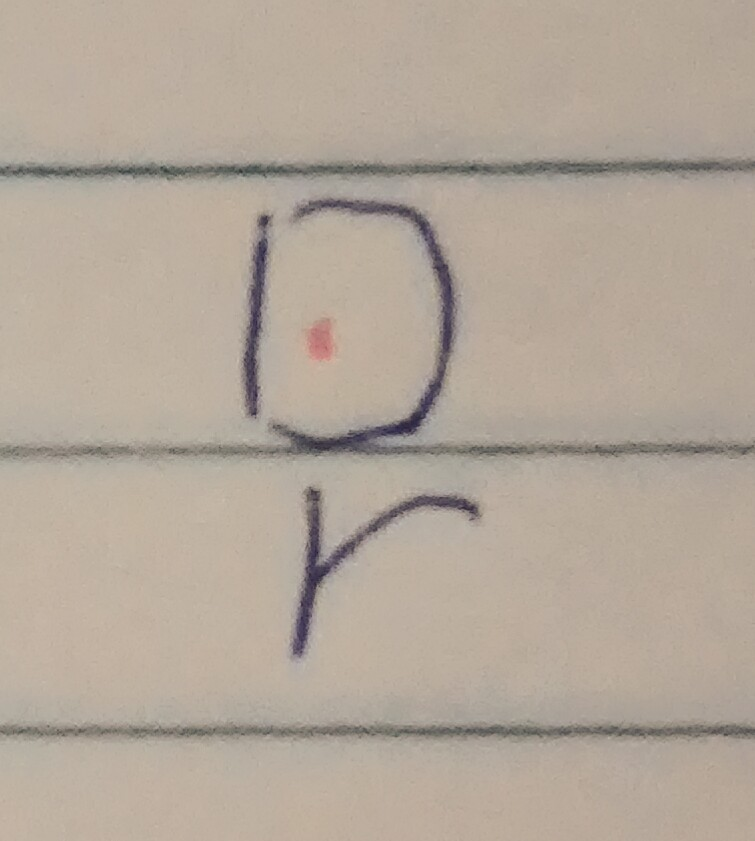
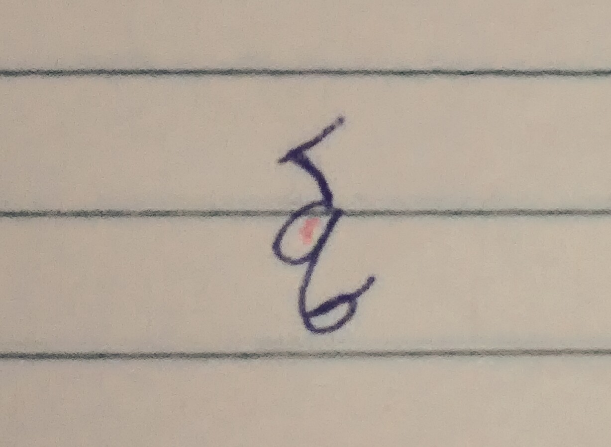
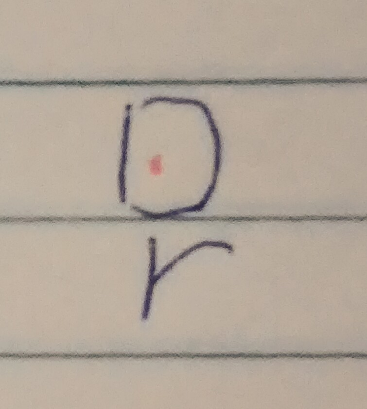

聲母
注音發音與英文類似
| ㄅ | ㄆ | ㄇ | ㄈ | ㄉ | ㄊ | ㄋ | ㄌ | ㄍ | ㄎ | ㄏ | ㄐ |
| b | p | m | f | d | t | n | l | g | k | h | j |
注音發音有卷舌多加一個h
| ㄓ | ㄔ | ㄕ | ㄗ | ㄘ | ㄙ |
| zh | ch | sh | z | c | s |
屬於強記類，用圖形記憶
| ㄑ | 像頭上長一根毛的天鵝，ㄑ形似毛，q形似天鵝。 |  |
| ㄒ | 一隻鬱卒的貓，ㄒ為貓臉，X是嘴巴。 |  |
| ㄖ | 翹鬍子的獨眼怪，ㄖ為眼睛，r是翹鬍子。 |  |
| ㄅ | ㄆ | ㄇ | ㄈ | ㄉ | ㄊ | ㄋ | ㄌ | ㄍ | ㄎ | ㄏ | ㄐ |
| b | p | m | f | d | t | n | l | g | k | h | j |
| ㄓ | ㄔ | ㄕ | ㄗ | ㄘ | ㄙ |
| zh | ch | sh | z | c | s |
| ㄑ | 像頭上長一根毛的天鵝，ㄑ形似毛，q形似天鵝。 |  |
| ㄒ | 一隻鬱卒的貓，ㄒ為貓臉，X是嘴巴。 | |
| ㄖ | 翹鬍子的獨眼怪，ㄖ為眼睛，r是翹鬍子。 |  |